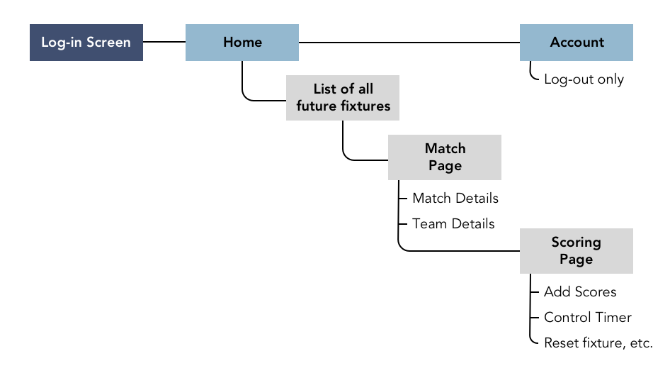
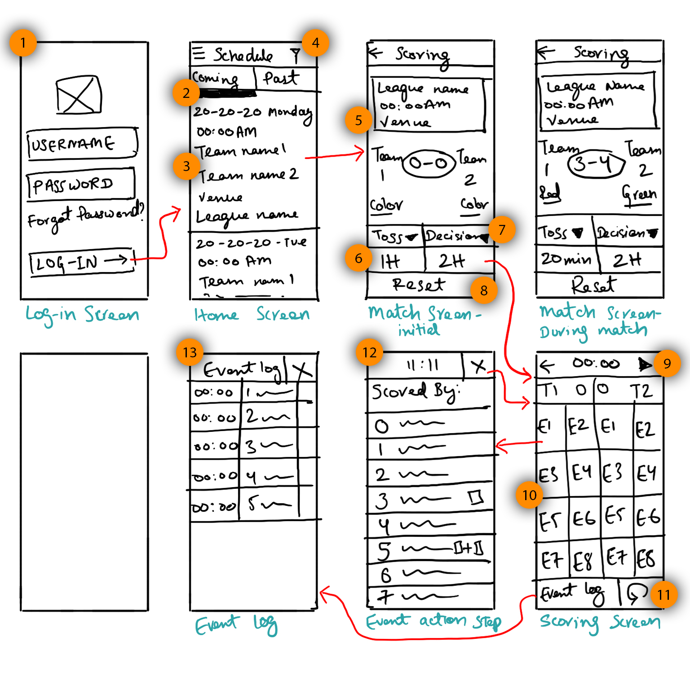
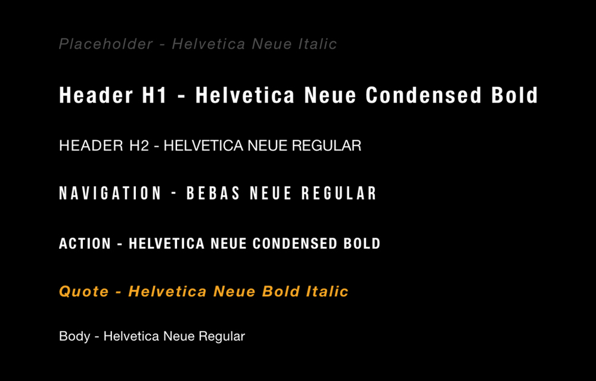

Soccer Scoring App
Prototype
View a Click-through Prototype
Role
Interaction & Visual Designer
Platform(s)
Native Android & iOS
Duration
2 weeks
Tools
Sketch, Illustrator, Photoshop, InVision
Methods
Wireframing, Product Flow, Sitemap, Color Palette, Iconography, UI Design, Usability Testing
Skim Through
Everything highlighted in orange is an important conclusion contributing to the final design decision
Understanding the Concept
Soccer Scoring App (SSA) was ideated as a plugin to an already live SaaS product: The Tournament Management Tool.
Tournament Management Tool (let's call it TMT) enables sports academies and authorities to organise and manage tournaments in a much efficient way compared to the previous paper based system.
A tournament organizer creates a soccer match using TMT by adding players for two teams, a venue, time slot and attaching a referee's profile to it.
When we put TMT through usability testing with a bunch of stakeholders, the feedback suggested that we could go a step further with the experience by building an interface that allows the referees to save match data(like scores and events) during the match, in real time.
This data, scores & events can then be viewed by fans on the tournament website as “LIVE SCORES”.
Presets
Since a referee is already a part of the TMT system, and the Soccer Scoring App (let's call it SSA) is an "extension" to it - the referees don't need to sign-up for SSA & rather will use their existing TMT account credentials to log-in.
Research & Elicitation
Methods
Research Methods:
Interviews with team stakeholders
Interviews with owners of soccer academies
Understanding the existing paper-based scoring documents.
Conclusions
There can be multiple referees for a tournament
The app will be used outdoors, can be under sun or rain with dust
A player's jersey number is an important metric to register an event with a player
The match halves do not have a fixed time frame - every match can be of different time limit
To be also used by uneducated coaches on mobile phones with older versions of Android
We were able to access the paper based scoring sheets to analyse the type of data usually added in a football match.
Key Hypothesis
User
Age: Around 30 to 60+, majorly male, occupation: professional coaches, retired players, academy staff and caretakers; education: high-schoolers to grads, low-to-moderate tech savviness.
Tasks
Tap event > select associated player.
Goal
To add an event happening in the match within a short time frame.
Environment
Outdoors; can be sunny, rainy, dusty and humid. Hence, the app should have higher contrast ratios with big distinct iconography and colors.
Tools
The product will be a native mobile app, also including older android versions; can be extended to tablets in later versions of the product.
More...
The referee would want to access the past matches
The interface should be expandable to other sports as well
The product will also include a match creator in the future so it can be used by users other than TMT users.
Site-map
Product architecture
Low-fidelity Wireframes
Initial Ideas for the interface design
1 - Referees already have their log-in details as they are already members of the TMT.
2 - A segmented screen to allow refrees to view past matches as well.
3 - Most important details like the time, venue, teams, etc. of the matches are mentioned here to help the referee select the right match.
4 - The filter on the top right corner can filter the list based on academy (if the referee is part of multiple tournaments/academies) and sport.
5 - The match screen lists the details again to aviod any confusion or error.
6 - For a soccer match, there are always 2 halves, which can be accessed from this section of the screen seperately.
7 - The referee can also record the toss winner & the decision taken by the winning captain.
8 - An option to reset the match data.
9 - The play button is to control the timer on the screen.
10 - There are eight important match events for soccer,(obtained from an interview with academy owners). Each event is listed as a big tile with a differentiating icon so that it can be located easily on a screen. On tapping any event, the player selection screen (point 12) will appear for the referee to select which player was associated with the event.
11 - At the bottom of the screen is a button to access the "event log" (point 13). When a referee adds an event, it gets added to the event log with the most recent event visible on the button on this screen. The referee can undo the event if needed.
12 - The player selection screen is a required action after selecting an event in order to determine the player associated with the event. It's clear from the research that a referee identifies a player by his/her jersey number. Hence, the jersey number gets an emphasis here so that the referee can easily locate the right player.
13 - The referee can access the Event Log any time during or after the match; and can delect a log if needed.
Knitting the Aesthetics
Based on all my research and elicitaions, we came a conclusion about using colors with high contrast, distinct iconography and crisp design elements. The font has also been selected keeping in mind the sense of visibility.
Typefaces
Colors

Crafting Icons
The Final Product
After many design critiques & feedback from the stakeholders; and multiple iterations, I was able to design the final version of the product.